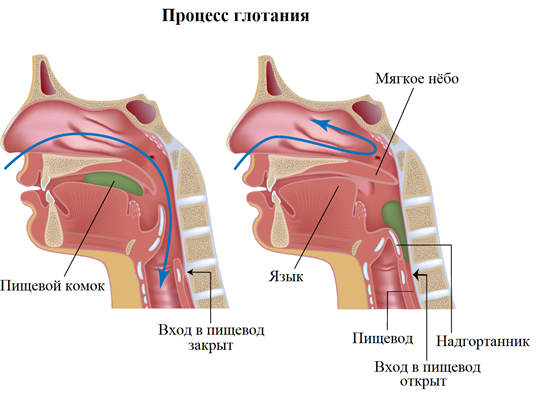

Пищеварение в ротовой полости

Ротовая полость играет ключевую роль в начальном этапе пищеварения, обеспечивая начальное разрушение и подготовку пищи для дальнейшего переработки в органах пищеварения. Важно хорошо жевать пищу и не торопиться при ее приеме, чтобы облегчить процесс пищеварения и улучшить усвоение питательных веществ.
- Механическое переработка: Когда вы начинаете жевать пищу, зубы разминают ее на более мелкие кусочки для облегчения дальнейшего процесса пищеварения. Этот процесс также способствует смешиванию пищи с слюной.
- Слюнная жидкость: Слюна содержит фермент под названием амилаза, который начинает процесс расщепления углеводов. Амилаза разлагает крахмал (сложный углевод) на более простые формы сахара.
- Формирование корма: После того как пища хорошо разжевана и смешана со слюной, она образует корм, называемый болюсом. Болюс перемещается в глотку и затем в пищевод для продолжения пути через желудок.